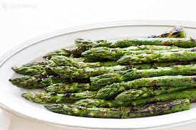

Grilled Asparagus Recipe

Description
Grilled asparagus is simple to make, but it lets you enjoy the natural flavor of your veggies. Fresh asparagus spears are coated with a bit of oil, salt, and pepper and cooked quickly over high heat on the grill. That's it!
Ingredients
- Asparagus
- Oil
- Seasoning, such as salt and pepper
Steps
- Toss the asparagus with olive oil, season, and grill until lightly charred.
- The asparagus should be perfectly cooked after three to five minutes on a lightly grill heated to high heat. You’ll know the asparagus spears are done when they are lightly charred and tender when pierced with a fork.